Launchpad 翻译指南
作者：TeliuTe 来源：基础教程网
四、bzr 上传 返回目录 下一课在 Launchpad 上创建好项目以后，就可以上传自己的翻译包文件了；
1、安装 bzr
1）打开终端输入 sudo apt-get install bzr，按提示输入自己密码完成安装，
然后输入 bzr whoami "TeliuTe <teliute@163.com>" 这个是用来标识自己的信息，双引号里改成自己的；
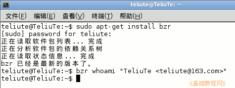
2）打开自己的主文件夹，新建一个 mybzr 文件夹，再在里面新建一个test 文件夹，在它里面拷入一个 test.pot 和一个 zh_CN.po 文件，
前面的pot文件名可以任意，后面的 po 文件必须是 zh_CN.po，这是中文翻译包，下载 test 范例；
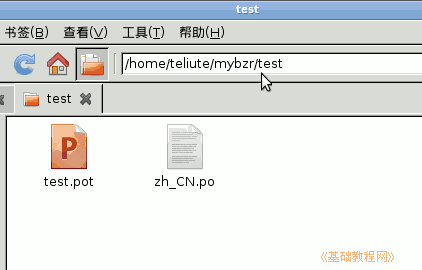
3）打开终端，输入命令 cd mybzr 进入到工作目录中；
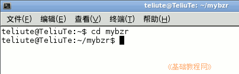
4）接着输入 bzr init 命令，把工作目录标识为一个分支；
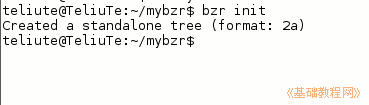
5）再接着输入 bzr add * 命令，把里面的文件添加到分支中，也就是前面创建的test文件夹和里面的两个翻译文件；
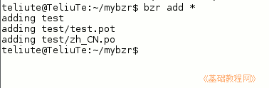
6）再接着输入 bzr commit -m "add test.pot, zh_CN.po" 命令，提交记录信息到分支里；
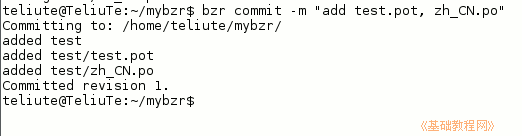
7）再接着输入 bzr launchpad-login teliute 登录自己的账号，再输入 bzr push lp:teliute 命令，将操作提交到 Launchpad 的项目上，或者输入 bzr push lp:~teliute/teliute/trunk
出来的密码提示中，输入自己的密钥密码；
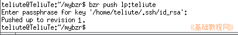
8）稍等完成上传后，登录 Launchpad 打开自己的项目地址，依次点“Code－Series: trunk－ Translations－Set up branch synchronization ”，设置分支同步选项；
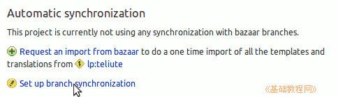
9）在导入选项中，选择最下边的“Import template and translation files”，然后点 “Save”保存选项；
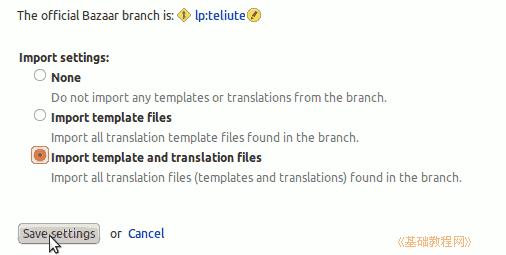
下边文件翻译进度列表中，红色是未翻译的，绿色是已翻译的，翻译成中文 Chinese；
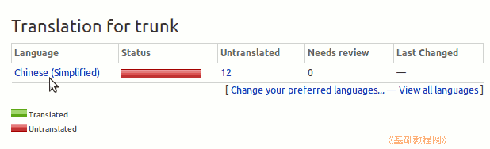
10）也可以点“自己的用户名－Code－lp:teliute－Translations”，先打开代码分支，再打开翻译列表；
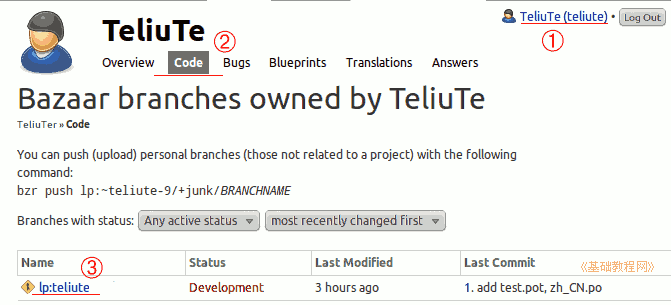
11）如果没看到翻译列表，就点上边的“Configure translations”，进去选中在 Launchpad 平台翻译，另外项目协议必须要有 BSD 协议，或者在 Translations 页面找到 import queue，点击进去看看导入的状态，应该是 Imported；
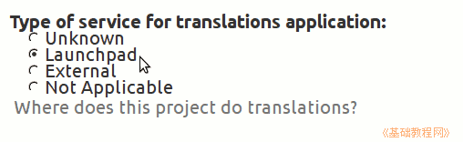
本节学习了 bzr 上传的基础知识，如果你成功地完成了练习，请继续学习下一课内容；
本教程由86团学校TeliuTe制作|著作权所有
基础教程网：http://teliute.org/
美丽的校园……
转载和引用本站内容，请保留作者和本站链接。